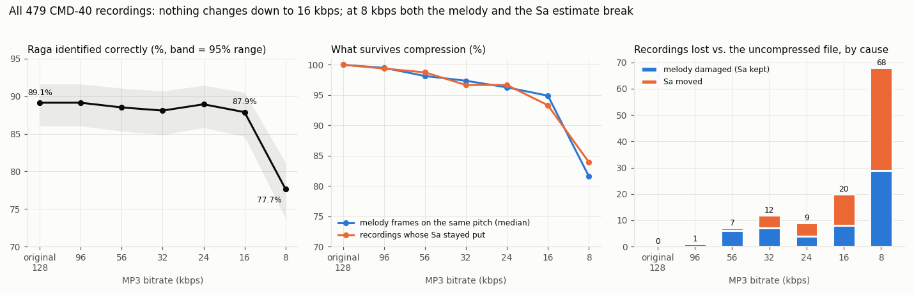
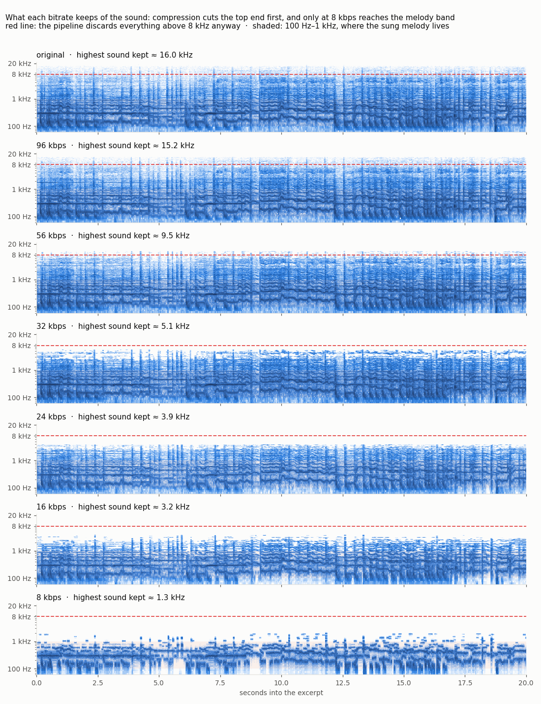
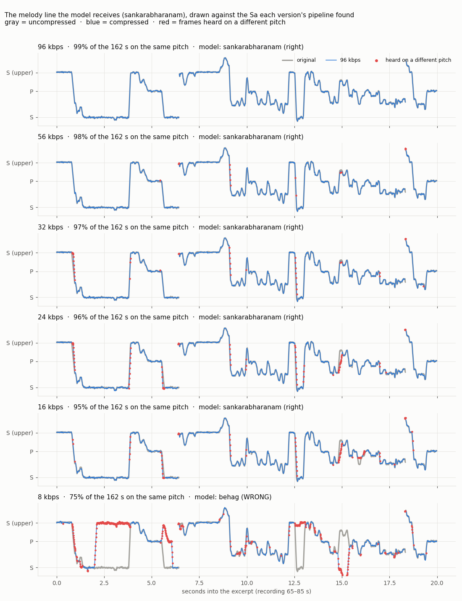
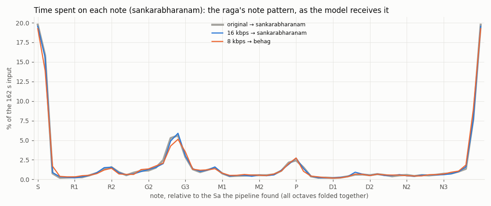
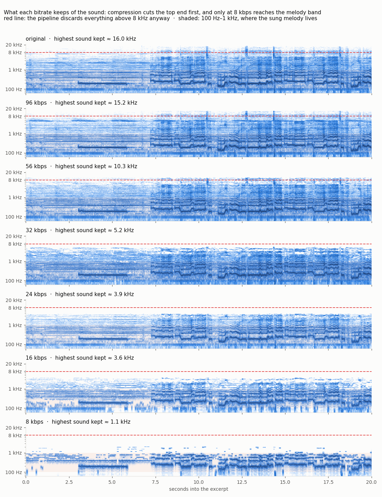
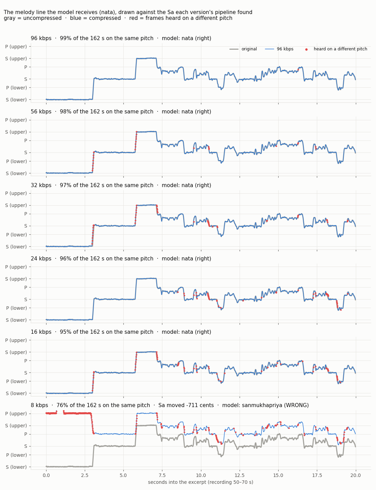
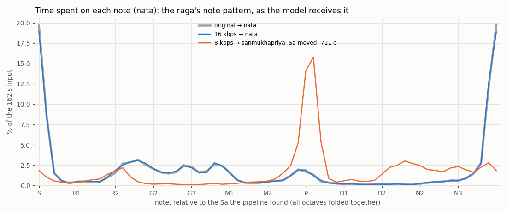

Each recording was compressed to 96 → 8 kbps and sent through the full pipeline (CREPE pitch → Essentia Sa → cvD model). Spectrogram = what the file still contains; melody = the pitch line the model actually reads; notes = the note pattern a raga is recognised from.

Excerpt 65–85 s of the recording. Listen from the top down.
| level | kbps | listen | model's answer | melody on same pitch | Sa |
|---|---|---|---|---|---|
| original | 128 | sankarabharanam ✓ | 100% | kept | |
| 96kbps | 96 | sankarabharanam ✓ | 99% | kept | |
| 56kbps | 56 | sankarabharanam ✓ | 98% | kept | |
| 32kbps | 32 | sankarabharanam ✓ | 97% | kept | |
| 24kbps | 24 | sankarabharanam ✓ | 96% | kept | |
| 16kbps | 16 | sankarabharanam ✓ | 95% | kept | |
| 8kbps | 8 | behag ✗ wrong | 75% | kept |



Excerpt 50–70 s of the recording. Listen from the top down.
| level | kbps | listen | model's answer | melody on same pitch | Sa |
|---|---|---|---|---|---|
| original | 160 | nata ✓ | 100% | kept | |
| 96kbps | 96 | nata ✓ | 99% | kept | |
| 56kbps | 56 | nata ✓ | 98% | kept | |
| 32kbps | 32 | nata ✓ | 97% | kept | |
| 24kbps | 24 | nata ✓ | 96% | kept | |
| 16kbps | 16 | nata ✓ | 95% | kept | |
| 8kbps | 8 | sanmukhapriya ✗ wrong | 76% | moved -711 c |


